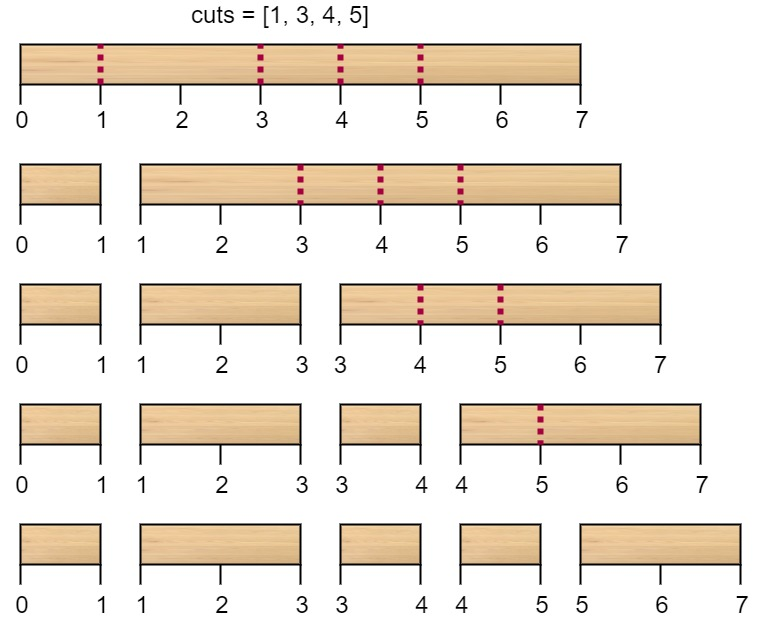

Given a wooden stick of length n units.
The stick is labelled from 0 to n. For example, a stick of length 6
is labelled as follows:

Given an integer array cuts where cuts[i] denotes a position you should perform a
cut at.
You should perform the cuts in order, you can change the order of the cuts as you wish.
The cost of one cut is the length of the stick to be cut, the total cost is the sum of costs of all cuts. When you cut a stick, it will be split into two smaller sticks (i.e. the sum of their lengths is the length of the stick before the cut). Please refer to the first example for a better explanation.
Return the minimum total cost of the cuts.
Example 1:

Input: n = 7, cuts = [1,3,4,5] Output: 16 Explanation: Using cuts order = [1, 3, 4, 5] as in the input leads to the following scenario:  The first cut is done to a rod of length 7 so the cost is 7. The second cut is done to a rod of length 6 (i.e. the second part of the first cut), the third is done to a rod of length 4 and the last cut is to a rod of length 3. The total cost is 7 + 6 + 4 + 3 = 20. Rearranging the cuts to be [3, 5, 1, 4] for example will lead to a scenario with total cost = 16 (as shown in the example photo 7 + 4 + 3 + 2 = 16).
Example 2:
Input: n = 9, cuts = [5,6,1,4,2] Output: 22 Explanation: If you try the given cuts ordering the cost will be 25. There are much ordering with total cost <= 25, for example, the order [4, 6, 5, 2, 1] has total cost = 22 which is the minimum possible.
Constraints:
2 <= n <= 1061 <= cuts.length <= min(n - 1, 100)1 <= cuts[i] <= n - 1- All the integers in
cutsarray are distinct.